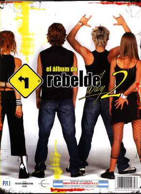
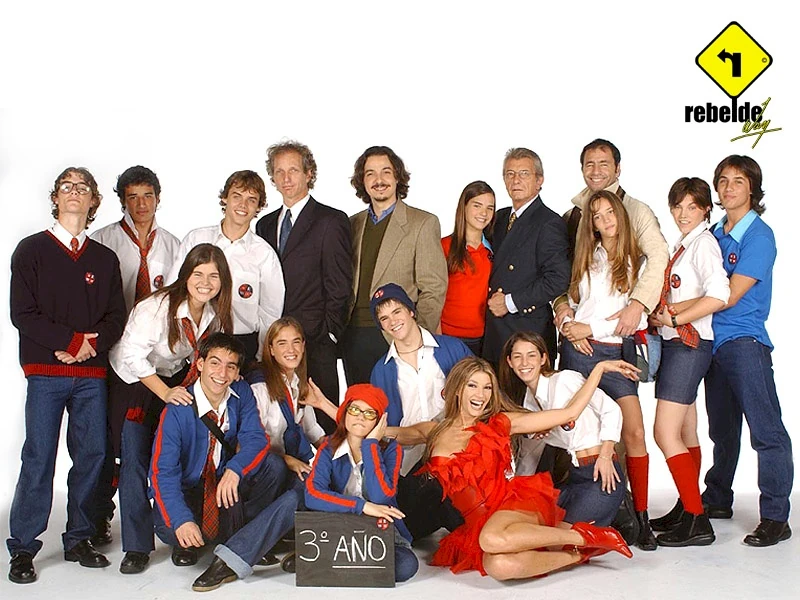
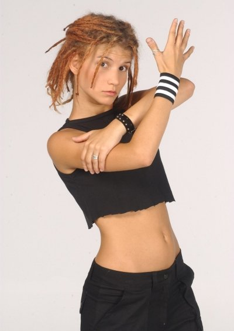
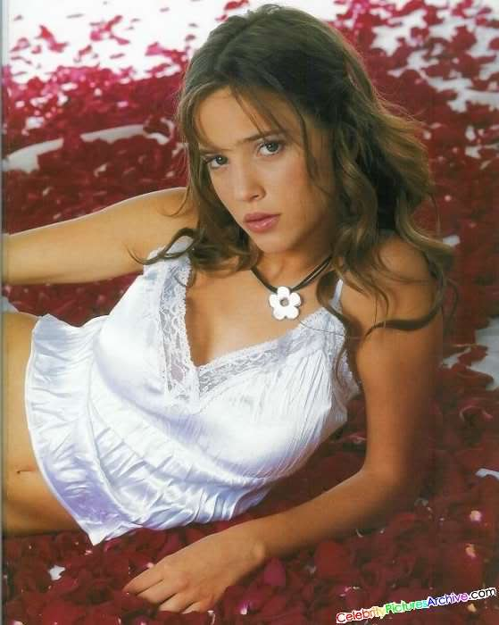
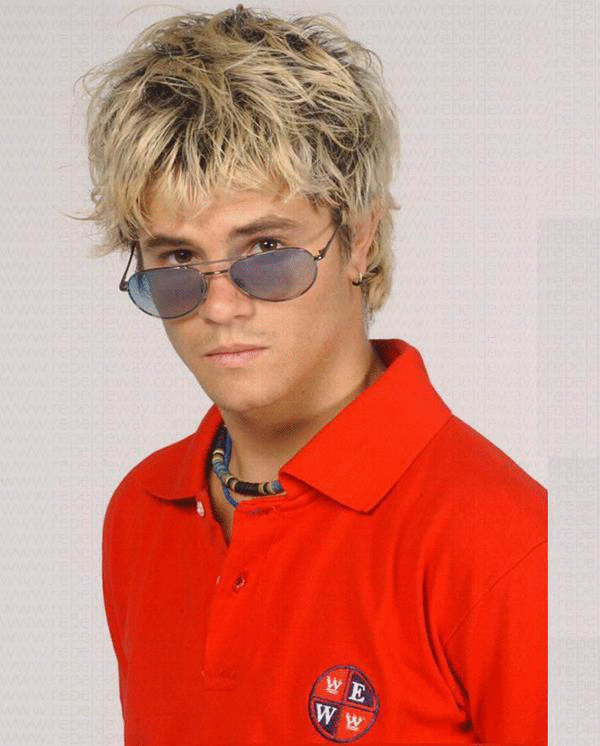

Rebelde Way fue una telenovela juvenil argentina. Comenzó a emitirse el 27 de mayo de 2002 en Azul TV, y el 20 de agosto de ese mismo año fue renombrado como Canal 9;

permaneció en dicho canal hasta que el 28 de julio de 20
En España, comenzó a emitirse a nivel público el 6 de septiembre de 2004 por la cadena Fox Kids (que más tarde cambió su nombre por el de Jetix), y más tarde por Localia y Cuatro. Tras el éxito recibido, salieron a la venta en España los productos oficiales como DVD, revistas, álbumes de cromos e incluso se editaron dos nuevos discos de Erreway y un pack con todo su material. En 2006 dos de los protagonistas de la serie, Felipe Colombo y Camila Bordonaba llegaron a España en verano para ofrecer entrevistas y firmas de discos. Tanto fue el éxito de su llegada que la banda Erreway se volvió a reunir, aunque sin Luisana Lopilato para dar varios recitales a finales de 2006, y otro en el verano de 2007, siendo este su último show
sus protagonistas adultos fueron Catherine Fulop y Martín Seefeld, junto con Miguel Ángel Cherutti, Susana Ortiz y Fernán Mirás. Contó con las participaciones antagónicas de Boy Olmi, Pablo Heredia, Malena Solda, Inés Palombo, Gimena Accardi, Mariano Bertolini, Sabrina Garciarena y Adriana Salonia. También contó con la participación estelar de la primera actriz Hilda Bernard.

- Camila Bordonaba:

- Luisana Lopilato

- Benjamín Rojas

- Felipe Colombo
